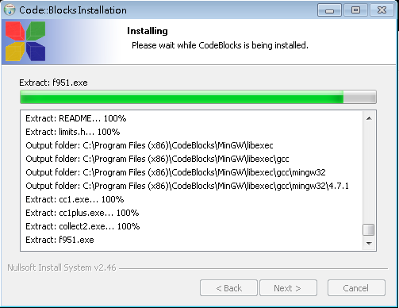

程式語言基礎
林品儒
2016/1/28
社團介紹
NTNUCIC
台師大資訊研究社
對資訊相關有興趣的人都來~~
自我介紹
林品儒
www.github.com/aigecko
師大貓耳控
程式是啥米
向電腦發出指令使其服從操作
給電腦看?
給人類看?
程式執行
編輯:Edit -> 原始碼
編譯:Compile -> 目的檔
組譯:Assemble -> 機械碼
連結:Link -> 執行檔
執行:Run
程式語言
高階語言
組合語言
機械語言
高階語言
- Ruby/ Perl/ Python
- JavaScript
- C#/ C++/ Java
方便人類撰寫與開發
適合人類閱讀
不適合電腦閱讀
中階語言
C語言
和電腦的運行關連性較高
適合電腦閱讀
不適合人類閱讀
組合語言/機械語言
8d 74 26 00 lea 0x0(%esi,%eiz,1),%esi
8b 54 24 28 mov 0x28(%esp),%edx
89 44 24 04 mov %eax,0x4(%esp)
8b 44 24 20 mov 0x20(%esp),%eax
89 54 24 08 mov %edx,0x8(%esp)
89 04 24 mov %eax,(%esp)
e8 38 06 00 00 call 6b902250 <___mingw_TLScallback>
b8 01 00 00 00 mov $0x1,%eax
83 c4 1c add $0x1c,%esp
c2 0c 00 ret $0xc換湯不換藥
標記語言
- HTML
- XML
- CSS
毫無反應，只是個標記語言
C++
雖然看起來很C但我們還是寫C++
使用GCC編譯器
搭配整合開發環境更方便
IDE
整合開發環境
將文字編輯以及編譯除錯的功能整合
DevC++,VS,Code::Blocks
和ATA沒有關係
C::B
Code::Blocks

C::B
跨平台
開放原始碼
功能多
下載連結
http://www.codeblocks.org/downloads/26

我都用sudo apt-get install codeblocks
新手安裝指南
為了廣大使用Windows的社會大眾
還是告訴各位安裝的程序
開啟安裝檔
同意條款

選擇安裝種類
建議全部安裝
選擇安裝路徑

放給他跑
30秒不到就可以安裝完成

開啟C::B

設定編譯器

開啟檔案關連

第一個程式
#include <stdio.h>
int main(){
printf("hello, world");
return 0;
}按下F9後編譯執行
記得要存檔
記得副檔名要存成.cpp

執行結果
大家快來踹
安裝Code::Blocks
#include <stdio.h>
int main(){
printf("hello, world");
return 0;
}編譯執行
基礎語法
在程式語言中有一定的語法規範
學習語言有風險詳情請看規格說明書
來說明hello,world是怎麼回事吧~~
井字號
在C::B中以綠色呈現
#符號代表程式碼預處理用
在編譯前發揮作用
可以引入函式庫或是定義巨集
主函式
int main(){}
程式執行的主要部份
程式執行的第一個函式
別再寫void main(){}了
陳述語句
printf("hello,world");
列印傳入的"hello,world"
記得最後一定要有分號
回傳值
return 0;
函式中負責回傳結果
在主函式中回傳執行狀況
主函式中可省略
關鍵字
在C::B中以藍色粗體呈現
該單字有特殊意義
不可作為取名之用
變數與型別
變數可以用來裝東西
而裝的東西有分型別
各語言的型別可能略有出入
在C/C++中各型別佔有不同的記憶體空間
變數
名稱可以使用英文數字底線
名稱有區分大小寫
宣告後只能裝指定型態的東西
依照宣告的位置不同能用的範圍也不同
變數宣告
使用變數前需要先宣告
型別放最前面 空白後接著逗號分個的變數
記得變數名稱不可使用關鍵字取名
變數宣告時可以順便初始化
bool isAlive,done=true;
布林值
佔用8位元空間
bool僅有兩個值true和false
在C/C++中0為false
非0則為true
不用是bool也可以判斷真假
整數
整數可以是有號或無號
也有不同數字範圍限制的整數
整數運算超出範圍會溢位
整數字面常數
十進位可以直接以數字表達整數
八進位使用0開頭且可使用0到7的數字
十六進位使用0x開頭使用數字和A到F
有號整數
16位元：short
32位元：int,long
64位元：long long int,long
編譯器32或64位元會造成結果不同
有號整數範圍
16位元：-32768~32767
32位元：-2147483648~2147483647
64位元：真的有夠大的範圍...
-9223372036854775808~-9223372036854775807
雖然很大但還是有爆炸的可能
有號整數軼事
某個有錢人擲骰子電腦遊戲有個BUG
查21億有錢人NPC的稅
自己會破產~~
無號整數
只要在有號整數前加上關鍵字
unsigned
就可以讓整數範圍限制非負數
正數的表達範圍變成2倍
無號整數軼事
某韓國2D樹葉之地形線上遊戲
只要最大血量超過65535
損血後補個血就會死翹翹
謹記
整數是有範圍限制的
不論是有號或是無號
一定要保持在範圍內操作以免危險
您一定不希望玩家補血身亡
浮點數
有不同精準度
float：32位元
double：64位元
long double：96,128位元
其運算原理較複雜不詳述
float約準確到7位 而double則是14位
練習
練習宣告變數的語法
16位元無號整數 s 給予值0755
32位元整數 n 給予值0x5566
單精度浮點數 f 給予值1.23456789
雙精度浮點數 d 給予值-1.602e-19
字元
存放8位元的ASCII字元
char
也可以當8位元的有號整數來用
記住不能放中文...
中文字
不要小看中文字的顯示
其中編碼原理在此不講
各位只要知道1個char裝不下...
至少你無法用255種變化表達所有中文字
字元字面常數
使用單引號將字元包起來
'A' '0'
再次提醒單引號內只能放一個字元
跳脫字元
可以使用有特殊功能的字元
'\0'代表NULL字元
'\\'可以放入反斜線
'\n'代表換行
'\t'代表tab
乍看之下有2個字元實際上只有1個
字串字面常數
使用雙引號將多個字元包起來
前面的printf列印的就是字串
要把字串裝進變數另有學問...
中文字串問題恕不負責
格式化輸出
使用printf傳入字串以及多個值
"%d"對應32位元整數
"%f"對應浮點數
"%c"對應字元
"%s"對應字串"
"%x"輸出16進位32位元記憶體(!)
練習
呼叫格式參考printf("%c%d",'\n',55)
列印之前的變數s,n,f,d
記得變數的型態和字串格式要對應
四則運算
對於各種數字類型有四則運算可以操作
注意整數間運算只會是整數
浮點數間運算只會是浮點數
整數和浮點數運算會變浮點數
負數表示
負號 - 在數字前即為負數
可以用小括號將負數包起來
加法
符號 + 代表加法
小心別把數字加爆了
有號整數運算可以加上負數
減法
符號 - 代表減法
千萬別以為減法就不會爆炸...
無號整數減去比該值大的數會暴增
乘法
千萬不要使用英文字 x 當乘法
記得是 * 代表乘法
除法
使用 / 當除法
注意看是斜線不是反斜線!!
誠心推薦使用數字鍵盤準沒錯
整數除以0會讓程式崩潰
浮點數除以0則是無限大
取餘數
雖然名稱叫四則運算但取餘數也是一份子
使用 % 來取餘數
一樣要小心對0取餘數會導致崩潰
小括號
使用小括號可以改變運算的優先順序
這個應該不要多說了....
練習
運算以下算式並列印之
1+3*4/2
1/0.0
(1+7)/(4-2)*5
可以試試看用四則運算讓數字超出範圍